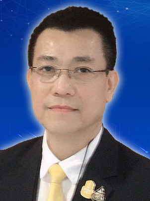

สาส์นจากอธิการบดีมหาวิทยาลัยราชภัฏเทพสตรี
วิสัยทัศน์มหาวิทยาลัยราชภัฏเทพสตรี คือ เป็นมหาวิทยาลัยชั้นนำในการผลิตบัณฑิตและการพัฒนาท้องถิ่นในเขตภูมิศาสตร์ภาคกลาง หนึ่งในพันธกิจที่ต้องดำเนินการ คือ พัฒนาท้องถิ่นด้วยการบูรณาการการวิจัย ภูมิปัญญา ศิลปะวัฒนธรรม และเทคโนโลยี โดยสอดคล้องกับเอกลักษณ์มหาวิทยาลัย คือ มหาวิทยาลัยที่ใช้นวัตกรรมต่อยอดภูมิปัญญาเพื่อการพัฒนาท้องถิ่น ซึ่งคณะเทคโนโลยีอุสาหกรรม เป็นหนึ่งในคณะ ฯ ที่มีความสามารถในสร้างงานวิจัยและพัฒนานวัตกรรม ได้เป็นอย่างดี ในการจัดงานการประชุมวิชาการระดับชาติ ECTI-CARD 2022 ครั้งที่ 14 ในหัวข้อ “เทคโนโลยีสู่ชุมชนแห่งนวัตกร : Technology for Innovator Community” เป็นการตอกย้ำถึงความเป็นมหาวิทยาลัยเพื่อการพัฒนาท้องถิ่นอย่างยั่งยืน และเป็นไปตามนโยบายและยุทธศาสตร์ของมหาวิทยาลัย ซึ่ึ่งทางคณะเทคโนโลยีอุตสาหกรรมได้ดำเนินการอย่างสอดคล้องกับนโยบายของทางมหาวิทยาลัย ฯ ที่ได้วางไว้ ขอให้การจัดงานประชุมวิชาการ ฯ ในครั้งนี้ สำเร็จลุล่วงตามวัตถุประสงค์ที่วางไว้ทุกประการ และหวังเป็นอย่างยิ่งว่าทุกท่านที่มาร่วมงานในครั้งนี้มีความสุขในการประชุม ท่องเที่ยวชมวังพระนารายณ์ราชนิเวศน์ และแหล่งท่องเที่ยวในจังหวัดลพบุรี
ผู้ช่วยศาสตราจารย์จินตนา เวชมี
อธิการบดีมหาวิทยาลัยราชภัฏเทพสตรี

สาส์นจากนายกสมาคม ECTI
ขอต้อนรับนักวิจัยทุกท่านสู่การประชุมวิชาการระดับชาติ งานวิจัย และพัฒนาเชิงประยุกต์ ครั้งที่ 14
(ECTI-CARD 2022)
ณ มหาวิทยาลัยราชภัฏเทพสตรี จังหวัดลพบุรี
การประชุมวิชาการ ECTI-CARD เป็นการประชุมวิชาการระดับชาติที่มุ่งเป้าผลงานวิจัยที่เป็นการประยุกต์ด้านไฟฟ้า อิเล็กทรอนิกส์ คอมพิวเตอร์ โทรคมนาคม และสารสนเทศ (Electrical Engineering/Electronics, Computer, Telecommunications, and Information Technology) ที่เน้นงานวิจัยและพัฒนาที่สามารถนำไปใช้งานได้จริงและเป็นประโยชน์กับประชาชน งานประชุมวิชาการนี้เริ่มจัดขึ้นครั้งแรกโดยกรรมการของสมาคม ECTI ณ มหาวิทยาลัยเกษตรศาสตร์ ในปีค.ศ. 2009 โดยการนำของ รศ.ดร. อนันต์ ผลเพิ่ม และได้เวียนกันจัดต่อมาในจังหวัดต่างๆ ทั่วประเทศไทยโดยมหาวิทยาลัยต่างๆ ได้แก่ มหาวิทยาลัยเทคโนโลยีมหานคร (2010) มหาวิทยาลัยรังสิต (2011) มหาวิทยาลัยเทคโนโลยีราชมงคลธัญญบุรี (2012) มหาวิทยาลัยเทคโนโลยีสุรนารี (2013) มหาวิทยาลัยเทคโนโลยีราชมงคลล้านนา (2014) มหาวิทยาลัยเทคโนโลยีราชมงคลศรีวิชัย (2015) มหาวิทยาลัยเทคโนโลยีราชมงคลพระนครและสถาบันมาตรวิทยาแห่งชาติ (2016) มหาวิทยาลัยราชภัฏอุดรธานีและมหาวิทยาลัยราชภัฏสกลนครและมหาวิทยาลัยราชภัฏเลย (2017) มหาวิทยาลัยนเรศวร (2018) มหาวิทยาลัยราชภัฏอุบลราชธานี(2019) มหาวิทยาลัยราชภัฏนครสวรรค์(2020) และมหาวิทยาลัยนครพนม(2021)
การประชุมวิชาการ ECTI-CARD ครั้งนี้นับเป็นครั้งที่ 14 ซึ่งมหาวิทยาลัยราชภัฏเทพสตรี นำโดย อ.ดร.สกุล คำนวนชัย คณบดีคณะเทคโนโลยีอุตสาหกรรม ได้ให้เกียรติเป็นเจ้าภาพจัดงานร่วมกับสมาคม ECTI และสถาบันมาตรวิทยาแห่งชาติ ภายใต้หัวข้อ “เทคโนโลยีสู่ชุมชนแห่งนวัตกร : Technology for Innovator Community” ในปีนี้ คณะผู้จัดงานได้เลือก จัดงานที่อาคารรัตนเทพสตรี มหาวิทยาลัยราชภัฏเทพสตรี ซึ่งอยู่กลางเมืองลพบุรี ผู้เข้าร่วมประชุมจะมีความสุขในการรายงานผลงานวิจัย อภิปรายองค์ความรู้ใหม่ๆ ที่นำมาแลกเปลี่ยนกัน และเกิดความคิดใหม่ๆ ในเชิงนวัตกรรม นอกจากนั้น ผู้เข้าร่วมประชุมควรใช้โอกาสนี้ในการเรียนรู้พระนารายณ์ราชนิเวศน์ และแหล่งท่องเที่ยวในจังหวัดลพบุรี
ในนามของสมาคม ECTI กระผมขอแสดงความขอบคุณกรรมการผู้จัดทุกท่าน คณะทำงานจากมหาวิทยาลัยราชภัฏเทพสตรี ผู้แต่งบทความวิจัย ผู้ตรวจบทความวิจัย และทุกท่านที่ทำงานเกี่ยวข้องกับการจัดงานนี้ ขอให้การประชุมวิชาการระดับชาติ ECTI-CARD 2022 ประสบความสำเร็จ และกระผมหวังเป็นอย่างยิ่งว่าจะได้พบกับผู้เข้าร่วมประชุมวิชาการทุกท่านที่งานประชุมวิชาการ ECTI-CARD ทุกๆ ปีตลอดไป
ศาสตราจารย์ ดร.วุฒิพงศ์ อารีกุล
นายกสมาคม ECTI
สาส์นจากคณบดีคณะเทคโนโลยีอุตสาหกรรม
" การพัฒนาท้องถิ่นถือเป็นหัวใจสำคัญของยุทธศาสตร์คณะเทคโนโลยีอุตสาหกรรม เนื่องด้วยหากท้องถิ่นมีการพัฒนาอย่างยั่งยืน
พื้นที่ต่าง ๆ ก็จะเกิดความเจริญทั้งทางด้านเศรษฐกิจ เทคโนโลยี วัฒนธรรม และอื่น ๆ "
ในการจัดการประชุมวิชาการระดับชาติ ECTI-CARD 2022 ในหัวข้อ “เทคโนโลยีสู่ชุมชนแห่งนวัตกร : Technology for Innovator Community” เป็นไปตามยุทธศาสตร์ของคณะเทคโนโลยีอุตสาหกรรม และมหาวิทยาลัยราชภัฏเทพสตรี โดยได้รับความไว้วางใจจากทาง สมาคมวิชาการไฟฟ้า อิเล็กทรอนิกส์ คอมพิวเตอร์ โทรคมนาคมและสารสนเทศแห่งประเทศไทย หรือ Electrical Engineering/Electronics, Computer, Telecommunications and Information Technology Association of Thailand (ECTI Thailand) มีจุดมุ่งหมายหลักของการจัดงานเพื่อรวบรวมผลงานวิจัย งานนวัตกรรม สิ่งประดิษฐ์ และการพัฒนาเชิงประยุกต์ รวมถึงเพื่อเปิดโอกาสให้นักวิจัย ผู้พัฒนา ผู้ใช้งาน และหน่วยงานต่าง ๆ ได้มีโอกาสแลกเปลี่ยนเรียนรู้ทางวิชาการร่วมกัน อีกทั้งสามารถนำผลงานที่ตีพิมพ์ไปพัฒนาต่อยอดในระดับท้องถิ่น ระดับสากล และพัฒนาสู่ผลิตภัณฑ์ในเชิงพาณิชย์ได้
คณะเทคโนโลยีอุตสาหกรรม มหาวิทยาลัยราชภัฏเทพสตรี มีความยินดีเป็นอย่างยิ่งที่ได้รับเกียรติในการจัดงานในครั้งนี้ และทางคณะ ฯ ขอต้อนรับคณาจารย์ นักวิจัย นักศึกษา และผู้ที่มีส่วนเกี่ยวข้องทุกท่าน เข้าสู่เมืองลพบุรี ซึ่งได้ชื่อว่า "วังนารายณ์คู่บ้าน ศาลพระกาฬคู่เมือง ปรางค์สามยอดลือเลื่อง เมืองแห่งดินสอพอง เขื่อนป่าสักชลสิทธิ์เกริกก้อง แผ่นดินทองสมเด็จพระนารายณ์"
ขอขอบคุณ ผู้ช่วยศาสตราจารย์จินตนา เวชมี อธิการบดีมหาวิทยาลัยราชภัฏเทพสตรี ที่ให้การสนับสนุนในการจัดงานครั้งนี้เป็นอย่างดี และขอขอบคุณ สมาคม ECTI ที่ให้โอกาสทางคณะ ฯ ในการจัดประชุมวิชาการระดับชาติ ECTI-CARD 2022 หวังเป็นอย่างยิ่งว่าทุกท่านจะได้รับความประทับใจในการจัดงานครั้งนี้และอยู่ในความทรงจำของทุกท่านตลอดไป
อาจารย์ ดร.สกุล คำนวนชัย
คณบดีคณะเทคโนโลยีอุตสาหกรรม
มหาวิทยาลัยราชภัฏเทพสตรี
